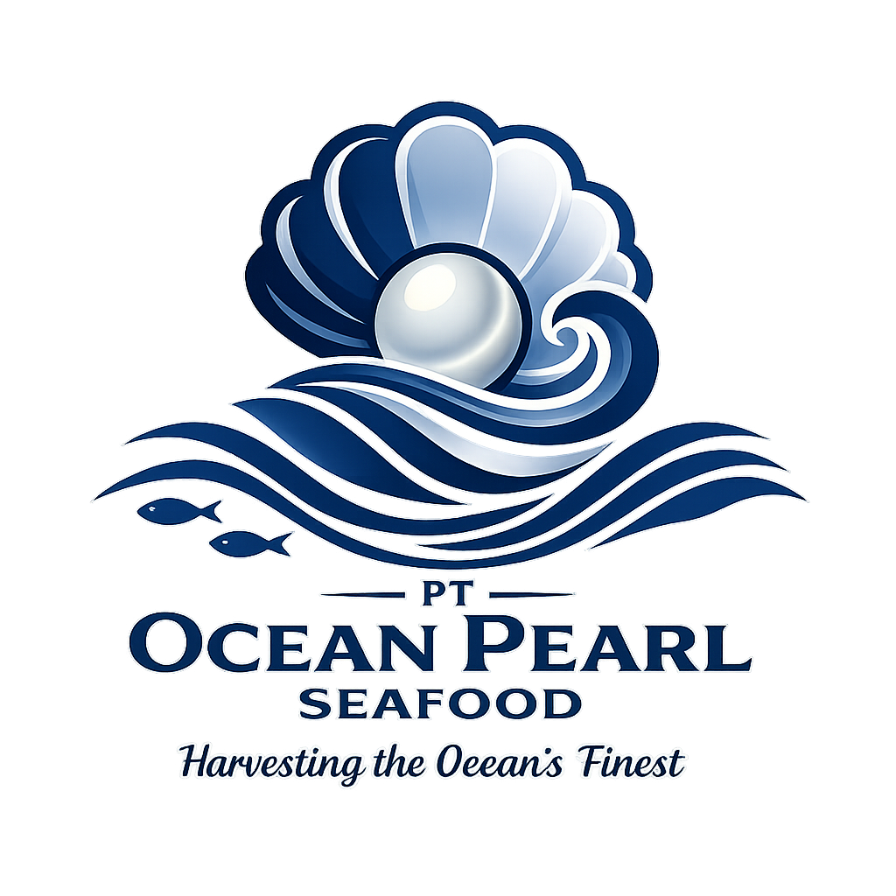
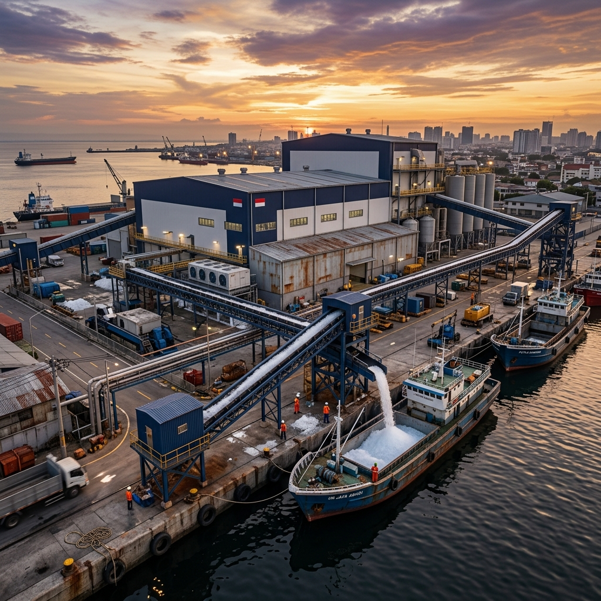
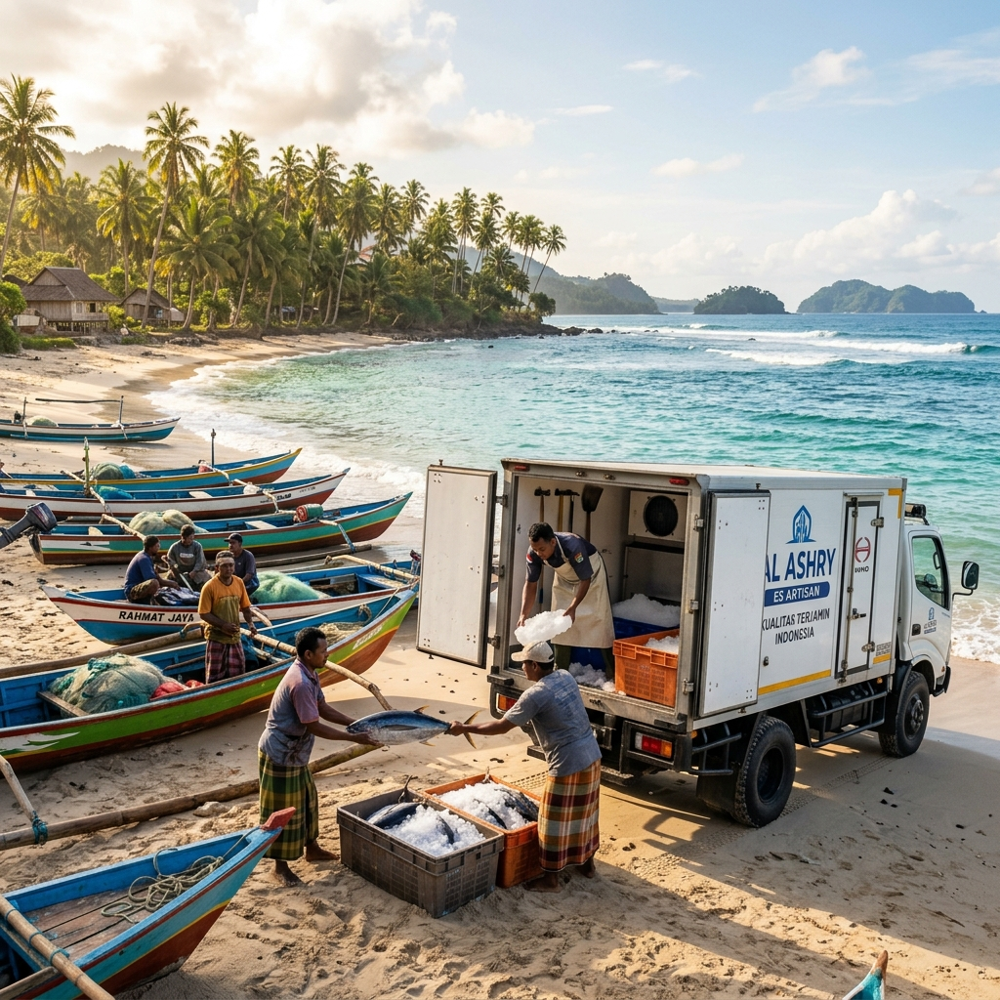
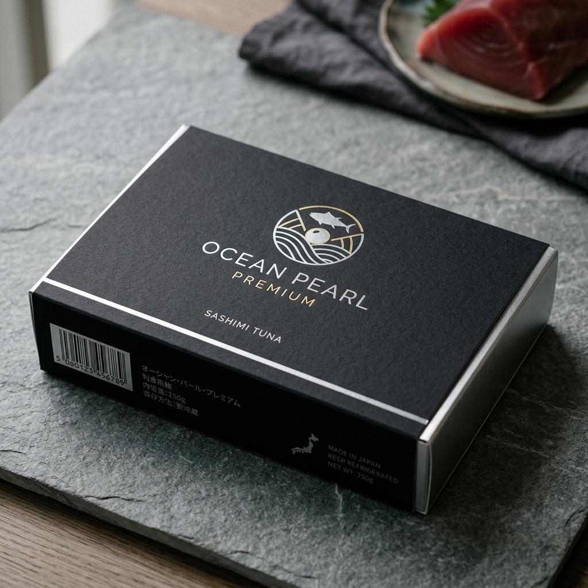
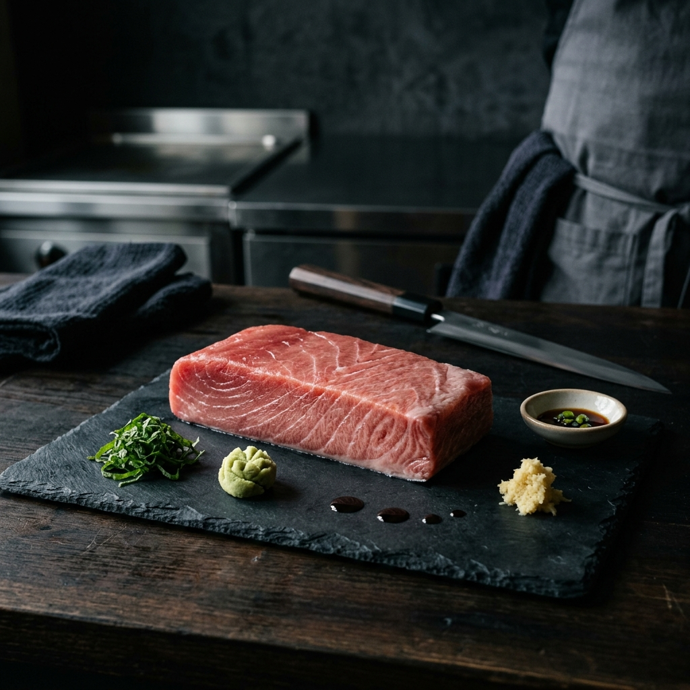
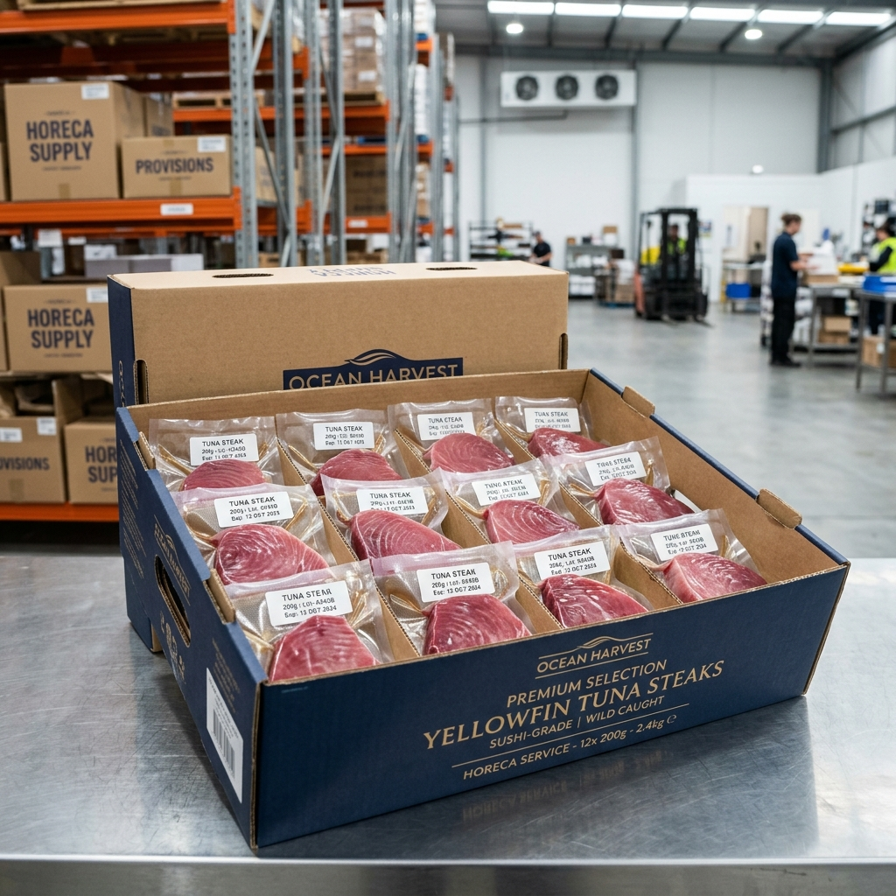
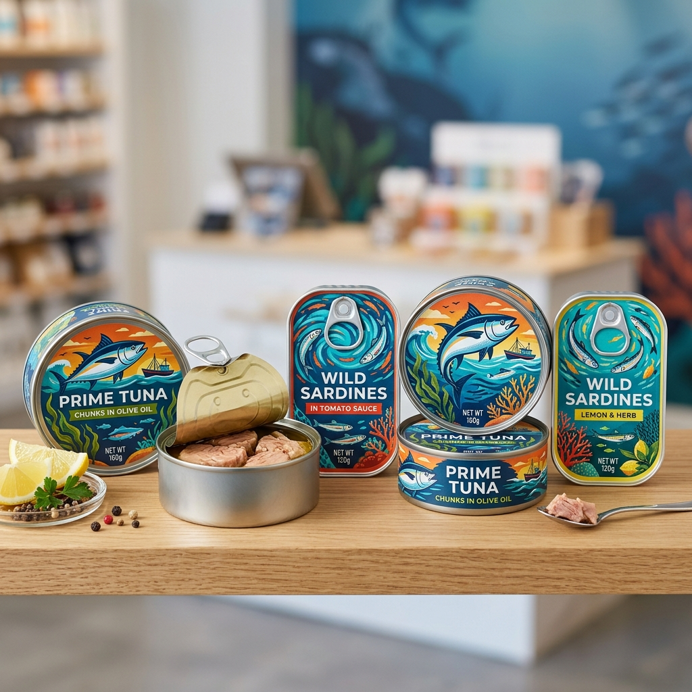
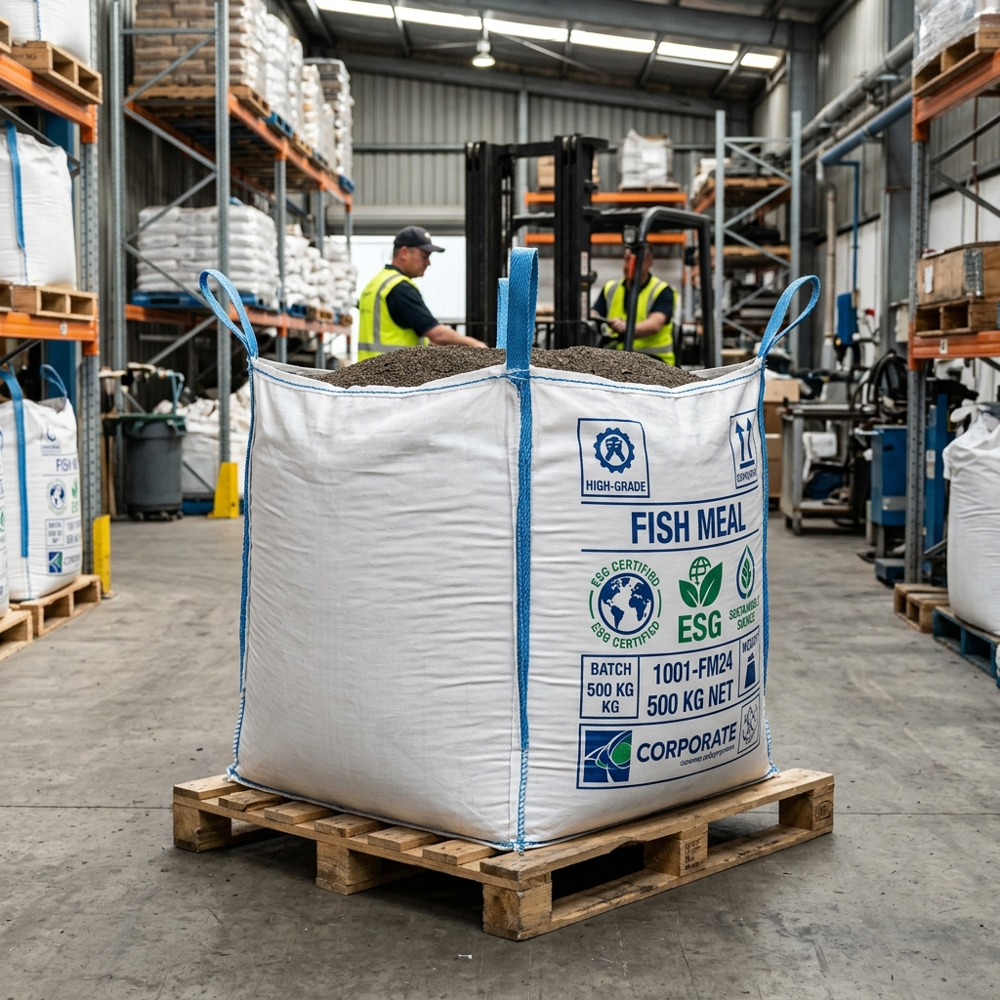
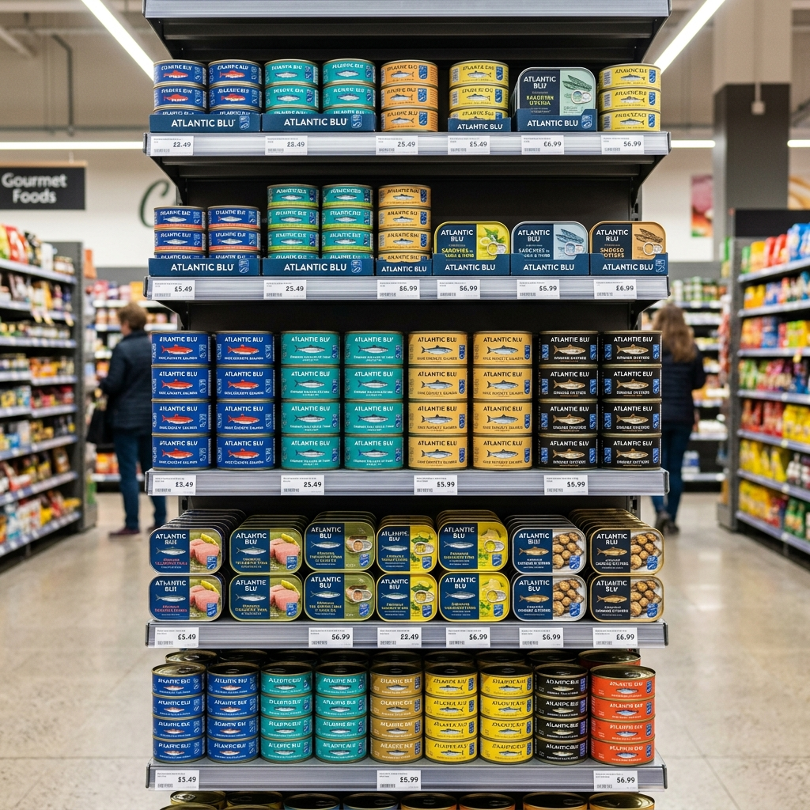

Section 4: AI Operations Platform
33
Global Command Center
Centralized visibility over 10,000+ moving logistics nodes.


Institutional Feasibility & Investment Memorandum
The $500M Institutional Master Blueprint for the Vertical Integration of an Indonesian-Headquartered Global Seafood Infrastructure Conglomerate.
Strictly Confidential
Prepared for Sovereign & Institutional Review
This Institutional Feasibility & Investment Memorandum (the "Memorandum") has been prepared exclusively for the confidential review of targeted sovereign wealth funds, project finance institutions, tier-1 infrastructure equity investors, and government ministries.
The information contained herein does not constitute an offer to sell or a solicitation of an offer to buy any securities or assets of PT Ocean Pearl Indonesia, its parent holding company, or its global subsidiaries.
PRELIMINARY FINANCIALS & FORWARD-LOOKING STATEMENTS: All financial metrics, EBITDA bridges, infrastructure yield calculations, working capital metrics, and staged capital deployment structures contained in this Memorandum are preliminary model outputs. All assumptions remain subject to verification. Projections are not guarantees of future performance and are provided solely for preliminary analytical discussion, subject to validation through independent legal, tax, financial, technical, operational, and market due diligence. Actual results, performance, or achievements may differ materially due to various risks, including global macroeconomic shifts, fuel and freight volatility, regulatory changes, climate impacts on marine biomass, and execution risks inherent in multinational infrastructure deployment.
DUE DILIGENCE REQUIRED: This document is not audited financial advice. Final investment decisions require independent legal, tax, financial, technical, operational, and market due diligence by the receiving party.
This document contains proprietary information, including but not limited to, the Al Ashry Tri-Format Ice Network deployment strategy, SuperFrozen LCO₂ integration models, USA M&A integration frameworks, and the Ocean Pearl Intelligent Operations Platform architecture. This document is strictly confidential. By accepting delivery of this Memorandum, the recipient agrees to maintain strict confidentiality and to not reproduce, distribute, or disclose this document, in whole or in part, without the express written consent of the Company.
Vertical Integration of the Seafood Supply Chain: From Artisanal Harvest to Global Institutional Retail.
Sales & Distribution: Managing HORECA and supermarket relationships across Egypt and the wider GCC.
Regional Inventory: Wholly-owned cold storage managing Indonesian, Omani, and Egyptian-origin products.
Local Sourcing: Monetizing Egyptian-origin products (Glass Eel, Crawfish, Red Sea items) via global Ocean Pearl channels.
Utilization of premium distributor partnerships to penetrate the Riyadh, Jeddah, and NEOM HORECA channels. Focus on SuperFrozen tuna, octopus, and premium shrimp.
Transition to a Saudi-owned distribution JV or entity once volume and margins justify direct cold-chain investment. Estimated P2 allocation: USD 10M–25M.
Reclaiming the 10-15% margin currently lost to international middlemen and distributors.
Immediate access to Tier-1 supermarket shelves and high-volume private label channels.
Utilizing an established import infrastructure to ensure seamless US market entry for ID products.
10-20% EBITDA improvement over 36 months through Ocean Pearl supply chain integration.
| Stage | Strategic Focus | Capital Allocation (USD) |
|---|---|---|
| Stage 0 | Strategic Formation / Pre-seed / Legal & Systems | USD 20,000,000 |
| Stage 1 | Operational Proof / Initial Hubs / Export Trials | USD 50,000,000 |
| Stage 2 | Regional Scale / Salalah Hub / Processing Upgrades | USD 100,000,000 |
| Stage 3 | Global Distribution Expansion / USA Acquisition | USD 150,000,000 |
| Stage 4 | Institutional Platform Scale / MENA & China Growth | USD 180,000,000 |
| TOTAL PLATFORM CAPITAL TARGET | USD 500,000,000 | |


| Infrastructure Module | Daily CapEx Yield | Supply Lock Radius |
|---|---|---|
| Fixed Ice Factory | High (Volume) | Local Port (50km) |
| Mobile Truck Unit | Med (Velocity) | Coastal (200km) |
| Vessel Ice Plant | Premium (Quality) | Deep Sea (Unlimited) |






EXECUTIVE QUERY: Evaluate diversion of 40 MT of Skipjack from Egypt Hub to Saudi JV based on current container freight indices.
ANALYSIS COMPLETE:

"Technology in seafood is largely applied to catch methods. Ocean Pearl is the first to apply it purely to margin protection."
| Macro Category | Driver / Variable | Base Assumption | Institutional Rationale |
|---|---|---|---|
| Pricing & Yield | Premium SuperFrozen Tuna | $18.50 / kg | Discounted 12% against 3-yr Toyosu moving average. |
| Canned / Mass Market | $2.80 / kg | Indexed to MENA FMCG bulk distributor rates. | |
| Processing Yield (Tuna) | 58.0% | Standardized industrial yield; offal routed to fishmeal. | |
| Operating Cost | Reefer Freight (Asia-USA) | $6,500 / TEU | Conservative structural baseline; ignores temporary spot lows. |
| Indonesia Labor Cost | $320 / month | Indexed to Surabaya regional minimum wage + 15% ESG premium. | |
| LCO2 Processing Cost | $0.45 / kg | Fixed utility assumption for -60°C rapid freeze. | |
| Working Capital | Inventory Days (Average) | 45 Days | Accounts for 30-day ocean transit + 15-day hub buffer. |
| Receivable Days (DSO) | 35 Days | Backed by letters of credit and trade finance facilities. |
| Product Pillar | Volume Target (MT) | % of Total Vol. | Gross Margin Target | % of Total Gross Profit |
|---|---|---|---|---|
| OP Premium (SuperFrozen) | 4,500 | 12.0% | 42.5% | 28.4% |
| Chef Selection (HORECA) | 11,200 | 29.8% | 28.0% | 31.2% |
| Ocean Gold (Smoked/RTE) | 2,100 | 5.6% | 38.0% | 11.5% |
| Canned Division | 14,800 | 39.4% | 18.5% | 22.1% |
| Marine Protein (Fishmeal) | 4,900 | 13.2% | 14.0% | 6.8% |
| PLATFORM TOTAL | 37,500 MT | 100.0% | 26.8% (Blended) | 100.0% |
| Asset Class | Est. Unit CapEx | Target Utilization | Useful Life | Payback Period |
|---|---|---|---|---|
| Fixed Ice Factory (50T/Day) | $1.20M | 85% | 15 Years | 4.2 Years |
| Mobile Truck Unit (Al Ashry) | $0.18M | 92% | 8 Years | 2.8 Years |
| Vessel Ice Generator Node | $0.45M | 95% | 10 Years | 3.1 Years |
| SuperFrozen LCO2 Line | $2.80M | 75% | 12 Years | 3.5 Years |
| Cold Storage Hub (5,000 MT) | $4.50M | 88% | 20 Years | 5.5 Years |
| Issuance Phase | Target Horizon | Structure | Underlying Asset Backing |
|---|---|---|---|
| Phase 1: Project Finance | Years 1 - 3 | Senior Secured Debt | Specific localized Indonesian/Omani processing facilities and physical assets. |
| Phase 2: M&A Facility | Year 3 - 4 | Mezzanine / Bridge Loan | Targeted USA Distributor cash-flows, contracts, and retail receivables. |
| Phase 3: Labuan Sukuk | Year 5+ | Corp. Green Sukuk (ESG) | The consolidated, stabilized EBITDA of the global holding platform. |
| Consolidated Metrics (USD M) | Year 1 | Year 3 | Year 5 (M&A) | Year 7 | Year 10 |
|---|---|---|---|---|---|
| Gross Platform Revenue | 42.5 | 118.2 | 285.4 | 390.6 | 510.2 |
| Cost of Goods Sold (COGS) | (32.3) | (87.4) | (199.7) | (265.6) | (341.8) |
| Gross Profit | 10.2 | 30.8 | 85.7 | 125.0 | 168.4 |
| Operating Expenses (SG&A) | (4.1) | (8.5) | (14.2) | (18.5) | (24.0) |
| Consolidated EBITDA | 6.1 | 22.3 | 71.5 | 106.5 | 144.4 |
| EBITDA Margin % | 14.3% | 18.8% | 25.0% | 27.2% | 28.3% |
| Cashflow Statement (USD M) | Year 1 | Year 2 | Year 3 | Year 4 (M&A) | Year 5 |
|---|---|---|---|---|---|
| Operating Cash Flow (OCF) | 3.2 | 8.4 | 18.5 | 35.2 | 62.8 |
| CapEx (Infrastructure Build) | (18.5) | (24.0) | (12.5) | (8.5) | (6.0) |
| M&A Acquisition Outlay | - | - | - | (45.0) | - |
| Unlevered Free Cash Flow | (15.3) | (15.6) | 6.0 | (18.3) | 56.8 |
| Debt Service (P+I) | (1.5) | (2.8) | (4.2) | (8.5) | (12.0) |
| Key Output Metric | Downside Case | Base Case | Upside Case |
|---|---|---|---|
| Scenario Definition | Prices drop 15%. Freight stays at pandemic highs. Utilization drops to 60%. | Current Toyosu baseline. Standard freight. 85% utilization. | Sashimi supercycle. Immediate USA synergy. 95% utilization. |
| Stabilized EBITDA Margin | 14.2% | 25.0% | 31.8% |
| Project IRR (Unlevered) | 11.4% | 22.8% (Preliminary model output — subject to full validation of assumptions, tax treatment, discount rate, terminal multiple, debt terms, market pricing, capex quotations, and operating execution) | 29.5% |
| Min DSCR (Year 1) | 1.3x | 2.1x | 2.8x |
| Freight Cost Variance |
-15% Price | -5% Price | Base Price | +5% Price | +15% Price |
|---|---|---|---|---|---|
| -20% Freight | 16.4% | 21.5% | 25.1% | 27.6% | 31.2% |
| Base Freight | 14.1% | 18.8% | 22.8% (Preliminary model output — subject to full validation of assumptions, tax treatment, discount rate, terminal multiple, debt terms, market pricing, capex quotations, and operating execution) | 25.4% | 28.9% |
| +20% Freight | 11.8% | 16.2% | 20.4% | 23.1% | 26.5% |
| Consolidated (USD '000) | Y1 | Y2 | Y3 | Y4 | Y5 | Y10 |
|---|---|---|---|---|---|---|
| Total Platform Revenue | 42,500 | 115,000 | 245,000 | 385,000 | 520,000 | 1,150,000 |
| Cost of Goods Sold (COGS) | (34,850) | (88,550) | (178,850) | (269,500) | (353,600) | (747,500) |
| Gross Profit | 7,650 | 26,450 | 66,150 | 115,500 | 166,400 | 402,500 |
| Operating Expenses (OPEX) | (4,250) | (10,350) | (19,600) | (30,800) | (41,600) | (92,000) |
| EBITDA | 3,400 | 16,100 | 46,550 | 84,700 | 124,800 | 310,500 |
| EBITDA Margin % | 8.0% | 14.0% | 19.0% | 22.0% | 24.0% (Y5) | 27.0% |
| Variable Change (+/-) | -20% Case | -10% Case | BASE CASE | +10% Case | +20% Case |
|---|---|---|---|---|---|
| Impact on IRR (Base 22.8% (Preliminary model output — subject to full validation of assumptions, tax treatment, discount rate, terminal multiple, debt terms, market pricing, capex quotations, and operating execution)) | 14.2% | 18.5% | 22.8% (Preliminary model output — subject to full validation of assumptions, tax treatment, discount rate, terminal multiple, debt terms, market pricing, capex quotations, and operating execution) | 26.4% | 31.2% |
| Raw Material Cost (Sourcing) | +8.4% IRR | +4.2% IRR | Neutral | -4.5% IRR | -9.2% IRR |
| Global Seafood Pricing | -12.5% IRR | -6.2% IRR | Neutral | +6.5% IRR | +13.4% IRR |
| Freight & Logistics Cost | +3.1% IRR | +1.5% IRR | Neutral | -1.8% IRR | -3.9% IRR |
| USA Synergy Underperf. | -- | -- | -2.4% IRR | -- | -- |
Institutional Guardrails, Intercompany Flow Discipline, and Global Compliance Standards.
Utilization of comparable uncontrolled price (CUP) and transactional net margin methods (TNMM) to ensure global pricing compliance. Documented value-creation metrics for the Indonesian HQ (AI IP, Brand, Strategy).
Phased dividend repatriation from USA and MENA hubs back to PT Ocean Pearl Indonesia. Management fee structure (3-5% of foreign revenue) for centralized HQ coordination and operational oversight.
Natural hedging through USD-denominated sales vs. IDR industrial costs. Forward contracts and currency swaps utilized for EUR/GBP retail exposures. 100% of major cross-border debt is matched to USD revenue streams.
Primary liquidity event for regional and national investors. Positioning as the first integrated Indonesian maritime industrial major.
Refinancing of infrastructure debt via Sharia-compliant global Sukuk, targeting GCC and Islamic liquidity pools.
"Ocean Pearl does not operate in the shadows of maritime trade. Our governance framework is built to survive the most rigorous Big-4 transaction audit, ensuring that every dollar of capital deployment and every MT of seafood export is documented, cleared, and compliant."
Positioning Ocean Pearl as Strategic National Infrastructure for the Republic of Indonesia.
Detailed Technical Specifications, Assumptions Registers, and Risk Mitigation Frameworks.
Technical Specifications, Full Assumptions Registers, and Risk Mitigation Frameworks.
| Category | Key Variable | Assumption / Value |
|---|---|---|
| Platform Capital | Total Investment Target | USD 500,000,000 |
| Indonesian Allocation | USD 120M - 150M (25-30%) | |
| International Allocation | USD 350M - 380M (70-75%) | |
| USA M&A | Target EBITDA Multiple | 6.5x Base (Range 5.5x - 7.5x) |
| Integration Synergy Uplift | 10% - 20% EBITDA improvement | |
| Integration Timeline | 18 - 24 Months | |
| LCO2 SuperFrozen | Premium Uplift Assumption | 20% - 30% Base Case |
| LCO2 Operating Cost | USD 80 - 160 per Ton processed |
1. Weighted Average Cost of Capital (WACC): A blended WACC of 12.0% is utilized as the primary discount rate. This accounts for a target 60:40 Debt-to-Equity ratio at maturity and incorporates a country-risk premium for Indonesian and MENA operations.
2. Terminal Value: Calculated using an 8.5x EBITDA (Preliminary model output — subject to full validation of assumptions, tax treatment, discount rate, terminal multiple, debt terms, market pricing, capex quotations, and operating execution) exit multiple in Year 10. This is conservative relative to global FMCG and industrial maritime benchmarks (9x-12x).
3. Inflation & Escalation: Revenue and OPEX are modeled in real USD terms, with a 3.0% annual escalation factor applied to Indonesian labor and fuel costs from Year 3 onwards.
4. Tax Assumptions: Effective corporate tax rates are modeled at 22% (Indonesia), 0% (Oman/Salalah Free Zone), and 21% (USA consolidated), subject to final tax-structuring review.
| Species | Yield (Whole-to-Loin) | SuperFrozen Upgrade | By-product Utilization |
|---|---|---|---|
| Yellowfin Tuna | 42% - 48% | High (Sashimi) | Meal / Oil / Pet Food |
| Bigeye Tuna | 45% - 52% | Extreme High | Meal / Oil |
| Octopus (Vulgaris) | 92% (Tenderized) | High (Texture) | N/A |
| Skipjack Tuna | 38% (Canned) | Low (Mass Market) | High Meal Yield |
| Risk Category | Mitigation Strategy | Risk Owner |
|---|---|---|
| Supply Volatility | Diversified sourcing across Oman, ID (multiple regions), and Egypt hubs. | COO |
| FX Volatility | Natural USD hedging vs. IDR industrial cost base. Currency forward use. | CFO |
| Regulatory Change | Centralized Government Relations in Jakarta and local legal hubs. | Legal / CEO |
| Execution Risk | Phased capital deployment (Stage 0 - 4) with operational KPI gates. | Project PMO |
End of Institutional Feasibility Memorandum.